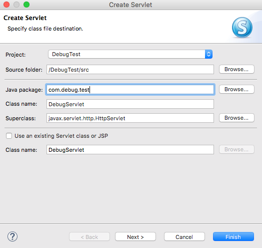
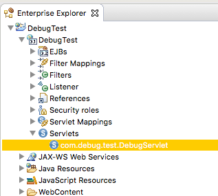
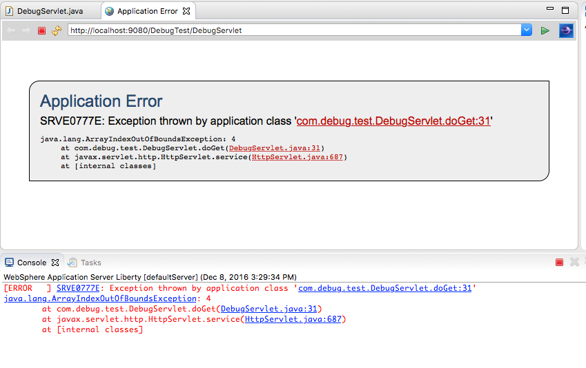
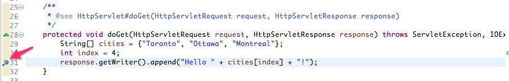
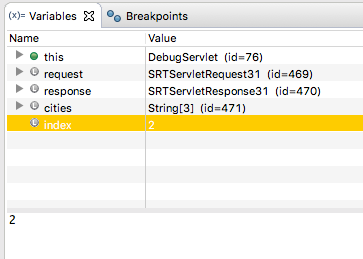
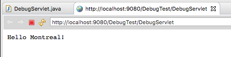
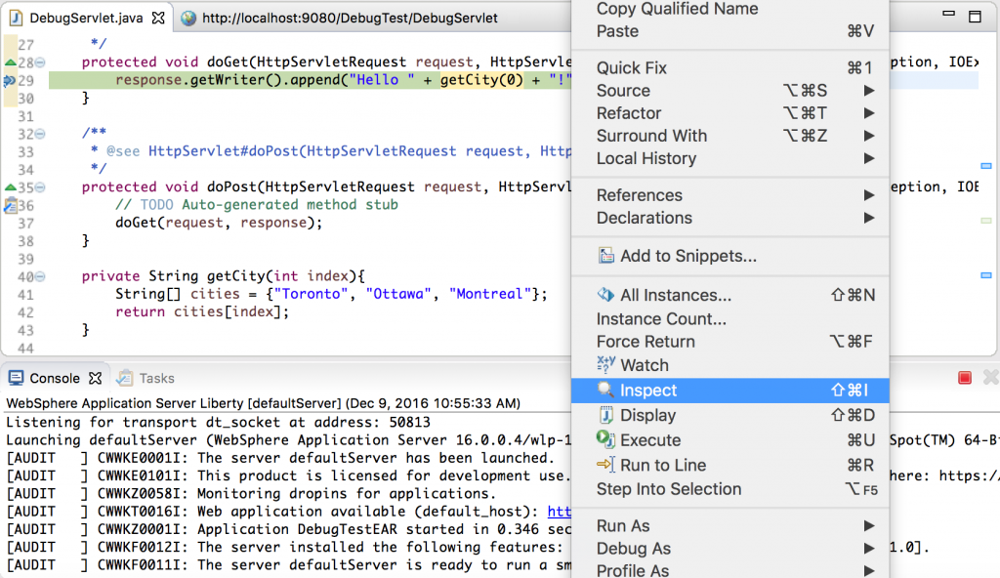
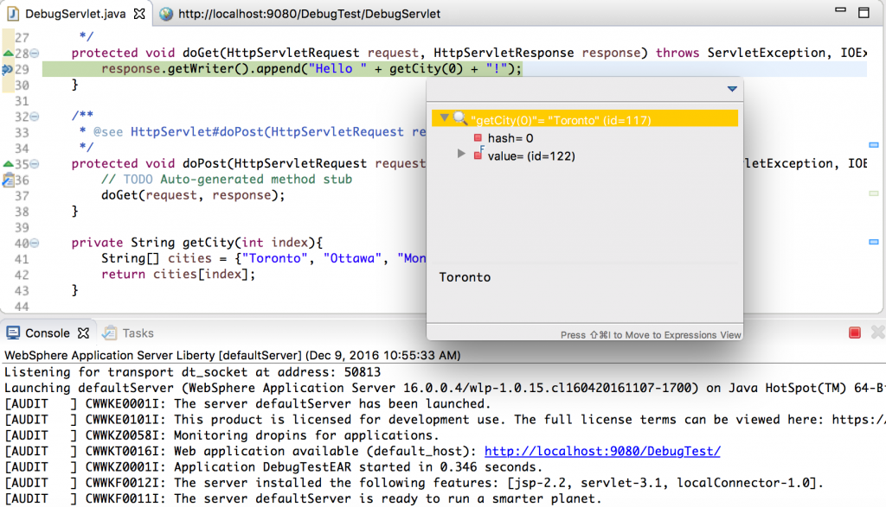
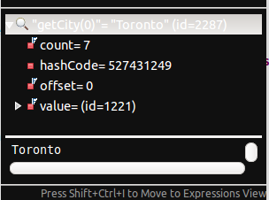

This article will cover some basics to help you develop and debug applications quickly using Liberty and the WebSphere Developer Tools for Eclipse (or WDT for short).
Before you start, download Eclipse. Start Eclipse, then drag and drop this button on to the toolbar to get WDT:

Create a Liberty server in WDT:
- In the Servers view, right-click then click New > Server.
- Under IBM select WebSphere Application Server Liberty and click Next.
- If you haven’t already installed a Liberty runtime, follow the wizard to install it; if you have installed a Liberty runtime, point the wizard to your existing installation.
- Name your server then click Finish.
The server is displayed in the Servers view. For more help getting started, see Get started with a Hello World app.
Create a test application to debug
- Create a Web Project:
- Right-click the DebugTest project and click New > Servlet.
- Fill in the package name (
com.debug.test) and class name (DebugServlet) and click Finish:
 - The servlet is created with some generated code. Replace the
doGetmethod with the code below:protected void doGet(HttpServletRequest request, HttpServletResponse response) throws ServletException, IOException { String[] cities = {"Toronto", "Ottawa", "Montreal"}; int index = 1; response.getWriter().append("Hello " + cities[index] + "!"); }
{kind=link}
{kind=link}
{kind=link}
Debugging the application
- First, let’s make sure we can run the application. Expand the DebugTest project, expand DebugTest > Servlets, then right-click the com.debug.test.DebugServlet servlet:
 - Click Run As > Run On Server, then select your newly created server and click Finish. WDT starts your Liberty server and launches a browser with the URL for your servlet.
-
Let’s introduce an error to the servlet so we can try out the debug features. In the
doGetmethod of theDebugServletclass, change theindexvalue to4, save the file and refresh the browser to run the servlet again.The browser and console now show an exception:
 -
Notice that there are links in the web page and in the Console view. Clicking on these links takes us straight to the line in the file in question. Click the link for the
DebugServletclass. -
You can set breakpoints to analyze your application using the debugger. Set a breakpoint on the line that writes the response by double-clicking to the left of the line marker on the line that starts
response.getWriter().append("Hello ":
 - The Liberty server needs to be in Debug mode to hit the breakpoint. Right-click the servlet and select Debug As > Debug On Server, then click Finish on the dialog.
- WDT prompts you to switch the server to Debug mode. Click OK to continue.
- The application launches but when the breakpoint is hit, the run is suspended and you may be prompted to open the Debug perspective. Click Yes to open the Debug perspective.
{kind=link}
{kind=link}
{kind=link}
Debugging the application in the Debug perspective
The Debug perspective has a lot of useful features for debugging applications. The Debug view lists the threads when the server is started in Debug mode.
To start the server in Debug mode and run your application, use the Debug As menu option or, in the Servers view, right-click the server then click Restart in Debug.

In-place variable substitution
We can test changes to variable values without editing the application and restarting the server:
- In the Variables view, we can see that the
citiesarray has 3 elements but we can see ourindexis4! - In the Variables view, we can change the value of
indexto another value to see if that resolves the issue:
 - Click the Resume button to continue execution of the application:
- After changing the index to 2 and resuming execution the browser shows:

{kind=link}
{kind=link}
{kind=link}
Hot method replacement
After completing the previous step, the browser shows the expected result but the source file is still not updated. If we forget to update the source file and refresh the browser we’ll hit the breakpoint again. The value of index hasn’t changed but we can use another useful feature called hot method replace to do this on the fly. Hot method replacement enables you to modify the source code while debugging and causes the debugger to backtrack within the current thread’s stack and re-run the method again from the beginning.
- Let’s try this out by changing the value of
indexto1and saving the file:After you save the file, the debugger returns to the beginning of the method.
-
Click the Resume button to continue running the application.
{kind=link}
Evaluating expressions
Sometimes it’s useful to see the output of a certain piece of code as you’re debugging your code. The debugger allows evaluation of expressions within the context of the currently suspended thread. To see this in action, let’s update the servlet with a new method that will be called from the doGet method:
- Without stopping the debugger, add a new method named
getCityto your servlet:private String getCity(int index){ String[] cities = {"Toronto", "Ottawa", "Montreal"}; return cities[index]; } -
Edit the
doGetmethod to look like this:protected void doGet(HttpServletRequest request, HttpServletResponse response) throws ServletException, IOException { response.getWriter().append("Hello " + getCity(0) + "!"); } -
With the breakpoint set to the
response.getWriter()line in thedoGetmethod, refresh the browser. - When the breakpoint has been hit, highlight the text
getCity(0)in the editor and right-click it to bring up the context menu. Click Inspect:

 - Without saving the editor, change
getCity(0)togetCity(1)then inspect the code again:

{kind=link}
{kind=link}
{kind=link}
Eclipse provides an array of debugging controls for navigating the thread stack, inspecting variables, evaluating expressions, and more. These are all useful tools that you can use to debug your Liberty applications, similar to how you would any Java application. For more details see the Eclipse documentation of debug controls (Eclipse Neon).
Viewing server logs
You can access the Liberty server logs easily through the Servers view. Simply right-click the server and select one of the options in the Open Log Files menu. The server logs contain chronological information about the server’s actions that can be useful when when you are dealing with certain types of problems (eg. application configuration problems). Tip: Messages preceded by an I or A are typically informational and audit messages respectively. Messages preceded by an E are error messages.